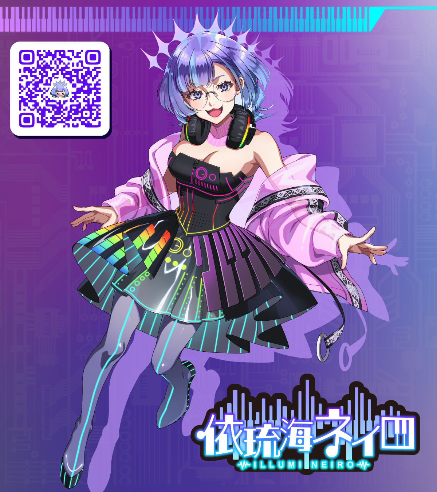

01
インスト音源（カラオケ音源）制作
歌ってみた・歌枠などの用途に合わせて、フルコーラスのインスト音源（カラオケ音源）を制作します。
¥30,000〜
フルコーラス / 通常3〜5分程度。
ワンコーラス・TV sizeの場合は半額。割引プランあり。

VTuber × Music Creator
歌うことも、創ることも。
「煌めく音のエンジニア」として、VTuber活動と音楽クリエイター活動を行っています。
COMMISSION
インスト音源（カラオケ音源）制作・オリジナルBGM制作・MIXなどのご依頼を受け付けています。
歌ってみた・歌枠などの用途に合わせて、フルコーラスのインスト音源（カラオケ音源）を制作します。
¥30,000〜
フルコーラス / 通常3〜5分程度。
ワンコーラス・TV sizeの場合は半額。割引プランあり。
歌ってみた用のMIXを行います。
コーラス・ハモリパートなどのトラック数によって料金が変動します。
¥8,000〜
コーラス・ハモリパートなどのトラック数によって変動します。
ワンコーラス・TV sizeの場合は半額。
待機画面・雑談・作業配信などに使える、個人配信用のオリジナルBGMを制作します。
¥10,000〜
1〜2分程度のオリジナルBGMを制作します。
おすすめ割引プラン
以下の条件にご了承いただける場合、通常よりお得な価格でご提供可能です。
すべてOKでなくても、①のみOKの場合でもお値引き対象とさせていただきます。
受付状況
ご依頼・ご相談は、フォームまたは各SNSのDMよりお問い合わせください。
お問い合わせへPROFILE
歌と音楽制作を中心に活動する音楽クリエイターVTuber。
歌ってみた、配信、カラオケ音源制作、MIX、BGM制作など、音を軸に活動しています。
GUIDELINE / SUPPORT
このガイドラインは、皆さまに安心して応援や創作活動を楽しんでいただくことを目的としています。 内容をご確認のうえ、常識の範囲内でお楽しみください。
依琉海ネイロを題材としたファンアート・二次創作を歓迎しています。 ガイドラインをご確認のうえ、無理のない範囲で創作活動をお楽しみください。
ファンアートをSNSへ投稿する際は、以下のタグをご利用ください。
#ネイロ画用紙
タグを付けて投稿された作品は、依琉海ネイロの配信・動画のサムネイル、 SNS投稿、活動紹介などで使用・紹介させていただく場合があります。
作品を使用する際は、可能な範囲で作者名や投稿元を記載します。 使用を希望されない場合は、投稿本文やプロフィールなど、 分かりやすい場所にその旨をご記載ください。
ご自身で描いた作品だけでなく、イラストレーターへ依頼して制作していただいた ファンアートも投稿していただけます。
依頼の際は、以下の内容をイラストレーターへ事前に伝え、許可を得てください。
依頼者とイラストレーターの間で定められた利用条件を優先してください。
依琉海ネイロ本人による使用が許可されていない作品については、 ファンアートタグを付けず、投稿内に使用不可である旨をご記載ください。
画像生成AIを使用して制作された作品については、 ファンアートタグ「#ネイロ画用紙」の使用、および依琉海ネイロのアカウントへの メンションや返信はお控えください。
ファンアートタグに投稿された作品は、配信・動画のサムネイルやSNS投稿などで 使用させていただく可能性があります。 権利関係や制作過程を確認することが難しいため、 AI生成作品は通常のファンアートと分けて取り扱いたいと考えています。
なお、AI生成作品そのものの投稿を禁止するものではありません。 投稿する場合は、AIを使用した作品であることが分かるよう、 投稿本文などに明記してください。
依琉海ネイロの一般公開されている配信・動画について、 以下の条件を守っていただける場合に限り、 切り抜き動画やスクリーンショットを投稿していただけます。
歌枠および歌ってみた動画については、楽曲の著作権管理上の理由から、 切り抜き動画の制作・投稿を一律で禁止します。
動画の長さ、使用する範囲、収益化の有無にかかわらず、 歌唱音声や映像の転載・再編集・再投稿はお控えください。
通常の配信内に歌唱や楽曲が含まれている場合も、 該当する部分を切り抜き動画へ使用しないでください。
メンバーシップ限定配信、限定公開・非公開となった動画、 有料コンテンツの切り抜きや転載は禁止します。
コラボ配信を切り抜く場合は、共演者および配信元チャンネルの ガイドラインもご確認ください。 ルールが異なる場合は、より制限の厳しい内容を優先してください。
YouTubeなどの動画投稿サービスが提供する通常の広告収益機能は、 本ガイドラインおよび各サービス・権利者の規約を守っている場合に限り利用できます。
企業案件、スポンサー付き投稿、切り抜き動画そのものの有料販売など、 事業性のある利用については事前にご相談ください。
切り抜き動画を、Content IDなどの自動識別システムへ ご自身の著作物として登録することは禁止します。
内容に問題があると判断した場合は、修正・非公開・削除をお願いすることがあります。 その際は速やかな対応をお願いいたします。
一般公開されている配信・動画のスクリーンショットは、 感想の投稿や活動紹介など、常識の範囲内でSNSへ投稿していただけます。
ただし、以下に該当する投稿は禁止します。
歌枠、歌ってみた動画、ライブ映像などのスクリーンショットについても、 画面内に歌詞が表示されている場合は、著作権上の都合により SNSへの投稿を禁止します。
可能な範囲で、元となった配信・動画のURLやチャンネル名を 併記していただけるとうれしいです。
依琉海ネイロが公開しているイラスト、ロゴ、動画、音声、楽曲、 インスト音源などの権利は、依琉海ネイロまたは各制作者・権利者に帰属します。
以下の行為はお控えください。
公式の動画や投稿を紹介する場合は、データを転載するのではなく、 YouTubeやSNSの共有機能、URL、埋め込み機能をご利用ください。
フリーBGMや配布素材などに個別の利用規約が設けられている場合は、 各作品の利用規約がこのガイドラインより優先されます。
個人で楽しむためのグッズ制作や、ご友人への少数のプレゼントなど、 非営利かつ個人的な範囲での制作は問題ありません。
以下に該当する場合は、制作や告知を始める前にお問い合わせください。
ファン企画やファングッズには、依琉海ネイロの公式企画・公式商品ではないことが 分かるよう、「非公式」「ファン企画」などの表記をお願いいたします。
公式イラストやロゴをそのまま使用したグッズの制作・販売はお控えください。 第三者が制作したファンアートを使用する場合は、 必ず制作者本人から許可を得てください。
配信やSNSでは、依琉海ネイロと視聴者の皆さまが 安心して楽しめる環境づくりにご協力ください。
配信ごとに個別のお願いがある場合は、 配信概要欄や配信内での案内を優先してください。
依琉海ネイロ本人や関係者のプライバシーを侵害する行為は禁止します。
依琉海ネイロ本人または公式アカウントになりすます行為も禁止します。
ファンアカウントを運営する場合は、プロフィールなどに 「非公式」「ファンアカウント」であることを明記し、 本人や公式と誤認されないようにしてください。
依琉海ネイロの声・容姿・活動内容を利用したディープフェイク、 ボイスクローン、なりすまし動画・音声などの制作や公開は禁止します。
以下に該当する活動や利用は禁止します。
このガイドラインは、ファン活動を制限することではなく、 皆さまに安心して応援・創作活動を楽しんでいただくことを目的としています。
本ガイドラインの内容は、活動状況や社会情勢などに応じて、 予告なく変更・追加する場合があります。 ファン活動や創作活動を行う際は、最新の内容をご確認ください。
個別の作品、配信、企画などに別途ルールが記載されている場合は、 そちらの内容を優先してください。
ガイドラインに沿っている場合でも、内容や状況によって、 公開・利用の中止、修正、削除などをお願いする場合があります。 あらかじめご了承ください。
活動を応援していただける方は、以下のサービスをご利用いただけます。
無理のない範囲で応援いただけるとうれしいです。
CONTACT
制作依頼・コラボ・その他お問い合わせは、以下のリンクからご連絡ください。
※リンク先は公開前に差し替えてください。